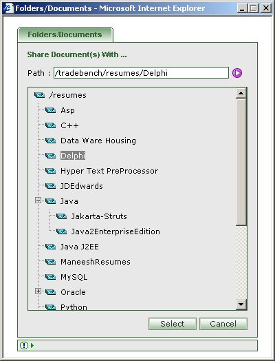

| How to share Document,Resume or Timesheet with other Folder? |
|

|
- First select the document,resume or timesheet you would like to share.
- You can select multiple document,resume or timesheet.
- Click on the 'Share With' icon [ ].
- Select the folder with which you would like to share the selected items.
- Press 'Select' to enable sharing of items.
- Press 'Cancel' to abort sharing.
|
|
Sharing Document,Resume or Timesheet is more useful than copying the same in that no memory is consumed and at the same time one can have multiple
references to the original item.
|